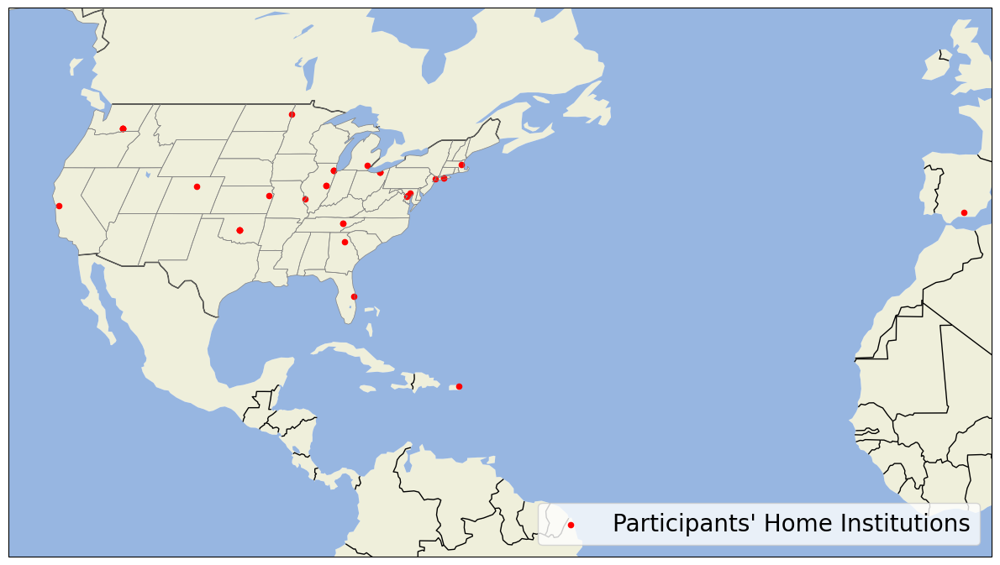

Map the Participants in the Summer School
Imports
import pandas as pd
import matplotlib.pyplot as plt
import cartopy.crs as ccrs
import cartopy.feature as cfeature
df = pd.read_csv("../data/metadata/arm-summer-school-participants.csv")
df_instructors = df.loc[df["Career Level"].str.contains("Instructor")]
df_students = df.loc[~df["Career Level"].str.contains("Instructor")]
fig = plt.figure(figsize=(12,8))
ax = plt.subplot(111,
projection=ccrs.Robinson()
)
ax.add_feature(cfeature.LAND)
ax.add_feature(cfeature.OCEAN)
ax.add_feature(cfeature.BORDERS)
ax.add_feature(cfeature.LAKES)
ax.add_feature(cfeature.STATES,
linewidth=0.5,
edgecolor='grey')
df.plot.scatter(x='lon',
y='lat',
c='red',
label="Participants' Home Institutions",
transform=ccrs.PlateCarree(),
ax=ax)
ax.set_extent([-120, 0, 0, 60], crs=ccrs.PlateCarree())
ax.legend(fontsize=20, loc='lower right')
plt.tight_layout()
plt.savefig("participant-map.png", dpi=300)

fig = plt.figure(figsize=(10,8))
ax = plt.subplot(111,
projection=ccrs.Robinson()
)
ax.add_feature(cfeature.LAND)
ax.add_feature(cfeature.OCEAN)
ax.add_feature(cfeature.BORDERS)
ax.add_feature(cfeature.LAKES)
df_instructors.plot.scatter(x='lon',
y='lat',
c='red',
label="Instructors' Home Institutions",
transform=ccrs.PlateCarree(),
ax=ax)
df_students.plot.scatter(x='lon',
y='lat',
c='blue',
label="Students' Home Institutions",
transform=ccrs.PlateCarree(),
ax=ax)
ax.set_extent([-120, 0, 0, 60], crs=ccrs.PlateCarree())
ax.legend(fontsize=20, loc='lower right')
<matplotlib.legend.Legend at 0x30aca0ed0>